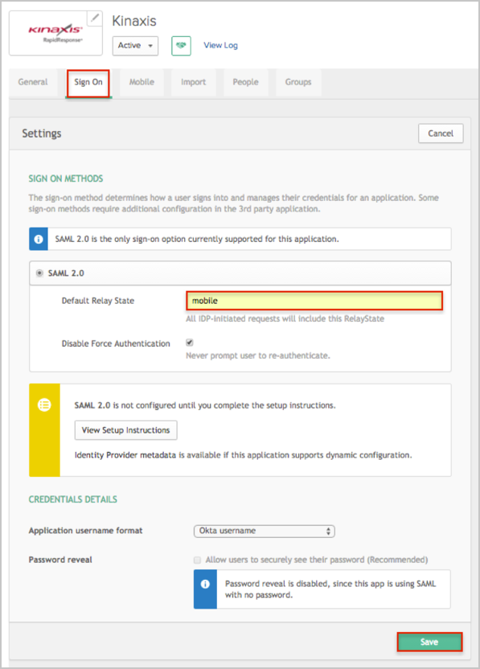

Send an email to the Kinaxis Support team and request that they enable SAML 2.0 for your account.
Copy and include the following Metadata URL:
Sign in to the Okta Admin app to have this variable generated for you
If you need to use RapidResponse Mobile client for the IDP-initiated flow:
In Okta, select the Sign On tab for the Kinaxis app, then click Edit.
For the Default Relay State, enter: mobile value.
Click Save.

The Kinaxis support team will process your request. After receiving a confirmation email, you can start assigning people to the application.
Notes:
IDP-initiated flows and SP-initiated flows are supported.
Just In Time (JIT) Provisioning is not supported.
For SP-initiated flows:
For the RapidResponse Desktop client: Open https:/rapidresponse[yourDatacenterPrefix].kinaxis.com/yourCompanyID/saml2.
For the RapidResponse Mobile client: Open https://rapidresponse[yourDatacenterPrefix].kinaxis.com/Mobile/yourCompanyID/saml2.